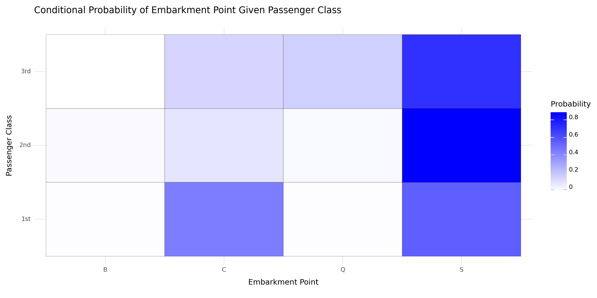
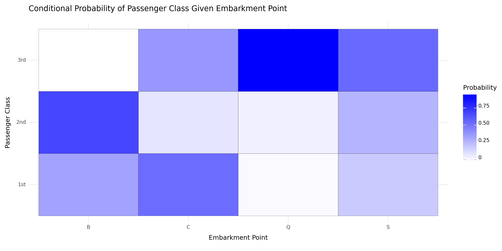

# Import the titanic dataset here
import numpy as np
import pandas as pd
import plotnine as p9Titanic Wrangling
In this practice activity you’ll continue to work with the titanic dataset in ways that flex what you’ve learned about both data wrangling and data visualization.
data_dir = "https://dlsun.github.io/pods/data/"
df_titanic = pd.read_csv(data_dir + "titanic.csv")Class Check-In 1
males_under_20_who_survived = df_titanic[(df_titanic["age"] < 20) & (df_titanic["gender"] == "male")]
males_under_20_who_survived| name | gender | age | class | embarked | country | ticketno | fare | survived | |
|---|---|---|---|---|---|---|---|---|---|
| 1 | Abbott, Mr. Eugene Joseph | male | 13.000000 | 3rd | S | United States | 2673.0 | 20.0500 | 0 |
| 2 | Abbott, Mr. Rossmore Edward | male | 16.000000 | 3rd | S | United States | 2673.0 | 20.0500 | 0 |
| 13 | Aks, Master. Frank Philip | male | 0.833333 | 3rd | S | England | 392091.0 | 9.0700 | 1 |
| 17 | Alhomäki, Mr. Ilmari Rudolf | male | 19.000000 | 3rd | S | Finland | 3101287.0 | 7.1806 | 0 |
| 22 | Allison, Master. Hudson Trevor | male | 0.916667 | 1st | S | Canada | 113781.0 | 151.1600 | 1 |
| ... | ... | ... | ... | ... | ... | ... | ... | ... | ... |
| 2138 | Villvarlange, Mr. Pierre Léon Gabriel | male | 19.000000 | restaurant staff | S | England | NaN | NaN | 0 |
| 2139 | Vine, Mr. Herbert Thomas Gordon | male | 18.000000 | restaurant staff | S | England | NaN | NaN | 0 |
| 2155 | Watson, Mr. William Albert | male | 15.000000 | victualling crew | S | England | NaN | NaN | 0 |
| 2166 | Whiteley, Mr. Thomas Arthur | male | 18.000000 | victualling crew | S | England | NaN | NaN | 1 |
| 2198 | Wrapson, Mr. Frederick Bernard | male | 19.000000 | victualling crew | B | England | NaN | NaN | 0 |
210 rows × 9 columns
1. Filter the data to include passengers only. Calculate the joint distribution (cross-tab) between a passenger’s class and where they embarked.
# Code here
df_titanic["type"] = df_titanic["class"].map({
"1st": "passenger",
"2nd": "passenger",
"3rd": "passenger",
"victualling crew": "crew",
"engineering crew": "crew",
"deck crew": "crew",
"restaurant staff" : "crew"
})
df_titanic = df_titanic[df_titanic["type"] == "passenger"]
pd.crosstab(df_titanic["class"], df_titanic["embarked"])| embarked | B | C | Q | S |
|---|---|---|---|---|
| class | ||||
| 1st | 3 | 143 | 3 | 175 |
| 2nd | 6 | 26 | 7 | 245 |
| 3rd | 0 | 102 | 113 | 494 |
2. Using the joint distribution that calculated above, calculate the following:
- the conditional distribution of their class given where they embarked
- the conditional distribution of where they embarked given their class
Use the conditional distributions that you calculate to answer the following quesitons:
- What proportion of 3rd class passengers embarked at Southampton?
- What proportion of Southampton passengers were in 3rd class?
# Code here
condition_class_given = pd.crosstab(df_titanic["class"], df_titanic["embarked"], normalize = "index")
condition_class_given| embarked | B | C | Q | S |
|---|---|---|---|---|
| class | ||||
| 1st | 0.009259 | 0.441358 | 0.009259 | 0.540123 |
| 2nd | 0.021127 | 0.091549 | 0.024648 | 0.862676 |
| 3rd | 0.000000 | 0.143865 | 0.159379 | 0.696756 |
69.6% of 3rd class passengers embarked at Southampton.
condition_embarked_given = pd.crosstab(df_titanic["class"], df_titanic["embarked"], normalize = "columns")
condition_embarked_given| embarked | B | C | Q | S |
|---|---|---|---|---|
| class | ||||
| 1st | 0.333333 | 0.527675 | 0.024390 | 0.191466 |
| 2nd | 0.666667 | 0.095941 | 0.056911 | 0.268053 |
| 3rd | 0.000000 | 0.376384 | 0.918699 | 0.540481 |
54.08% of Southampton passengers were in 3rd class.
3. Make a visualization showing the distribution of a passenger’s class, given where they embarked.
Discuss the pros and cons of using this visualization versus the distributions you calculated before, to answer the previous questions.
long_condition_class_given = condition_class_given.reset_index().melt(id_vars="class", var_name = "embarked", value_name= "probability")
long_condition_class_given| class | embarked | probability | |
|---|---|---|---|
| 0 | 1st | B | 0.009259 |
| 1 | 2nd | B | 0.021127 |
| 2 | 3rd | B | 0.000000 |
| 3 | 1st | C | 0.441358 |
| 4 | 2nd | C | 0.091549 |
| 5 | 3rd | C | 0.143865 |
| 6 | 1st | Q | 0.009259 |
| 7 | 2nd | Q | 0.024648 |
| 8 | 3rd | Q | 0.159379 |
| 9 | 1st | S | 0.540123 |
| 10 | 2nd | S | 0.862676 |
| 11 | 3rd | S | 0.696756 |
p9.options.figure_size = (12, 6)
(p9.ggplot(long_condition_class_given,
p9.aes(
x='embarked',
y='class'
))
+ p9.geom_tile(p9.aes(fill="probability"), colour="black")
+ p9.scale_fill_gradient(low="white", high="blue")
+ p9.theme_minimal()
+ p9.labs(title="Conditional Probability of Embarkment Point Given Passenger Class",
x="Embarkment Point",
y="Passenger Class",
fill="Probability")
)
<Figure Size: (1200 x 600)># Code here
long_condition_embarked_given = condition_embarked_given.reset_index().melt(id_vars="class", var_name = "embarked", value_name= "probability")
long_condition_embarked_given| class | embarked | probability | |
|---|---|---|---|
| 0 | 1st | B | 0.333333 |
| 1 | 2nd | B | 0.666667 |
| 2 | 3rd | B | 0.000000 |
| 3 | 1st | C | 0.527675 |
| 4 | 2nd | C | 0.095941 |
| 5 | 3rd | C | 0.376384 |
| 6 | 1st | Q | 0.024390 |
| 7 | 2nd | Q | 0.056911 |
| 8 | 3rd | Q | 0.918699 |
| 9 | 1st | S | 0.191466 |
| 10 | 2nd | S | 0.268053 |
| 11 | 3rd | S | 0.540481 |
p9.options.figure_size = (12, 6)
(p9.ggplot(long_condition_embarked_given,
p9.aes(
x='embarked',
y='class'
))
+ p9.geom_tile(p9.aes(fill="probability"), colour="black")
+ p9.scale_fill_gradient(low="white", high="blue")
+ p9.theme_minimal()
+ p9.labs(title="Conditional Probability of Passenger Class Given Embarkment Point",
x="Embarkment Point",
y="Passenger Class",
fill="Probability")
)
<Figure Size: (1200 x 600)>While a heatmap conveys the same information as the cross tabbed table above, it does so in a less interpretable manner. The key for the fill color leaves a lot of room for guessing, meaning that it is unclear the exact probability just by looking at the shade of color on that tile of the graph. Also, without a clear graph title, it is easily misinterpretable what conditional distribution is being shown as the axes and color scale are the same.
Citations: https://plotnine.readthedocs.io/en/stable/generated/plotnine.geoms.geom_tile.html